Reverse engineering a DOS game: B17 Flying Fortress
B-17 Flying Fortress is a 1992 flight simulation/crew management game published by Microprose for MS-DOS (later also for Amiga and Atari ST).
It was featured as the January 2023 game by DOS Game Club.
It is a bit slow/boring for my tastes, and I feel the flying itself is not focused on. However, DGC user Spoonboy is a great fan.
He was fascinated by the idea of encountering the legendary Messerschmitt Me 262 late-war German jet fighter in-game;
specially after someone found a reference to them inside binary game files.
He eventually found them during normal play - it seems they appear fleetingly, and only by the last two or so missions.
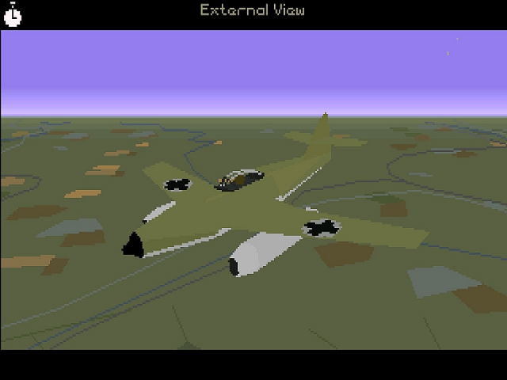
A Me262 in game
Still, looking for the strings as well sent me on a wild goose chase to look for and extract 3D models and other data from the game, which I am going to recount (I told about this on a Mastodon thread as I was doing it, but this will be more detailed).
The game files
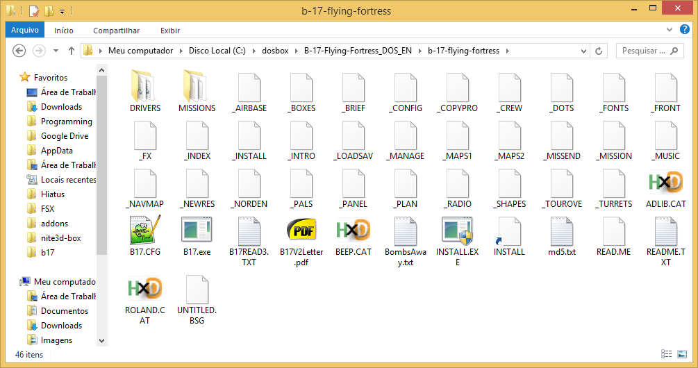
All of the game's files
Aside from the executable file (B17.EXE), what are probably sound drivers (ROLAND.CAT and ADLIB.CAT) and a couple text files, it seems all the game data is inside those binary files whose names start with an underscore.
The _INDEX file
Running Unix strings on the executable found nothing particularly interesting, nor on the other underscored files, but on _INDEX it found references to the Me262:
C:\dosbox\b17>strings _INDEX | grep me262
#shpeme262
shpeme262new
Note the shpe prefix.
I then used HxD Hex editor to examine the _INDEX file. It starts, very appropriately, with what seems to an index to the other underscored files. There are 28 (0x1C) such files.
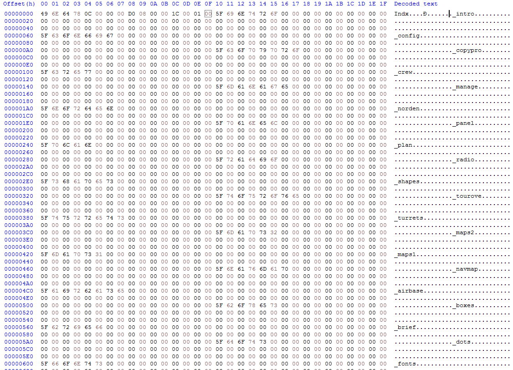
Head of _INDEX
Moving down, it contains all the way to the end a list of named resources (including shpeme262new), each entry is 22 bytes in total.
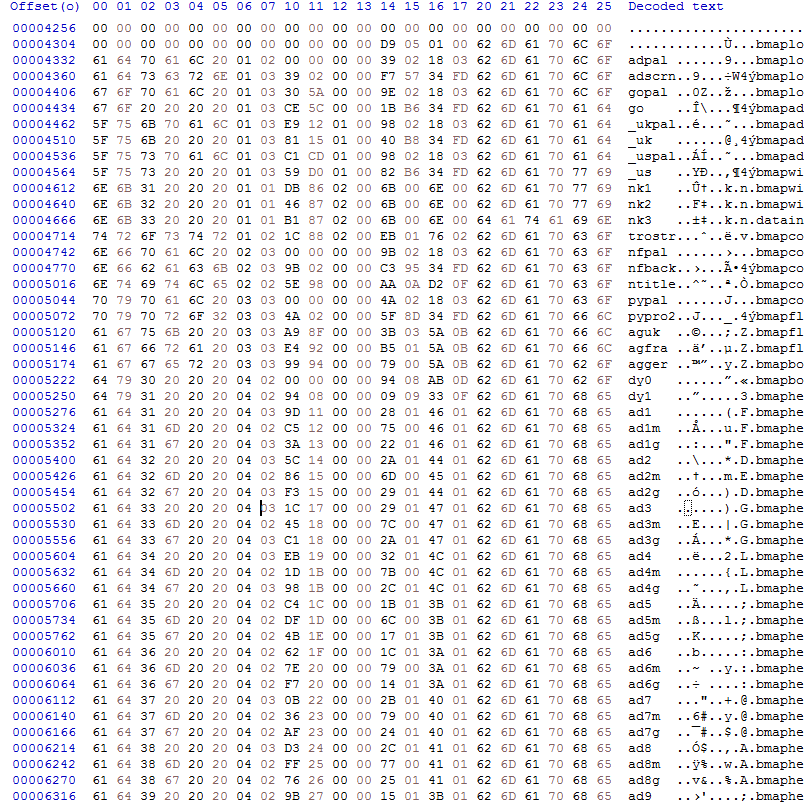
22 byte long resource entries
Each resource names has one out of nine different preffixes:
| bmap | Bitmaps, such as 320x200 background images |
| data | Seem to contain mostly string data such as crew names |
| sprt | Sprites, probably with animation and transparent areas |
| shpe | Shapes, i.e. 3D models |
| mppr | Maps? |
| dots | Also map related? |
| font | Fonts probably |
| sdrv | Sound driver data? Sound samples? |
| tune | Songs |
Lets look at a single resource. I chose to focus on bmapdeaduk. As the name implies, it is displayed when you crash while still over the United Kingdom, and die (there is a random chance crashing injures the bailing out crew which shows a different image). A different one is used when you crash over Germany.
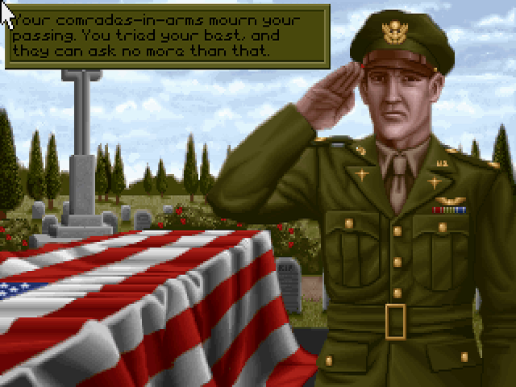
bmapdeaduk in-game, after crashing and dying on the United Kingdom
In the _INDEX file it looks like this:
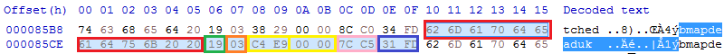
bmapdeaduk entry in the _INDEX file
I was able to guess (and later confirm those guesses) the meaning of each of the values in the entry:
| Hex value | Value (minding endianness) | Meaning |
| 62 6D 61 70 64 65 61 64 75 6B 20 20 | | 12 bytes | Resource name with prefix, right-padded with spaces (ASCII 0x20) |
| 19 | 25 | 1 byte | Those go from 0x01 to 0x1C (1 to 28), specifying the underscored file in which the resource is stored |
| 03 | 3 | 1 byte | Which decompression routine to use (4 kinds, so 0,1,2, or 3) |
| C4 E9 00 00 | 59844 | 4 bytes = 1 dword | Offset within the data file where the resource is stored |
| 7C C5 | 50556 | 2 bytes = 1 word | Compressed (stored) length |
| 31 FD | 64817 | 2 bytes = 1 word | Uncompressed length |
Having guessed there was compression, I tried QuickBMS comtype scanner[archive] on extracted compressed resources, trying a 1000 different algorithms, but to no avail, only garbage data out.
Logging with the DOSBox debugger
I then used the DOSBox debugger to go looking for the decompression routine.
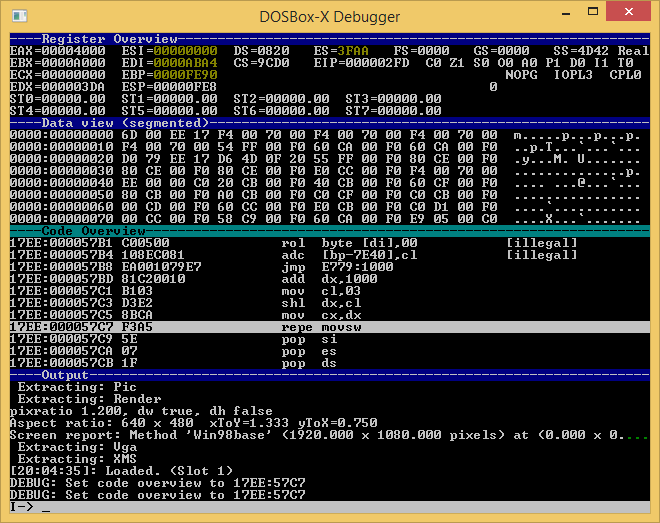
The DOSBox debugger looks like this
There were two guides which were very useful in understanding how to use it, one by DOSBox-X[archive] and one from VOGONS forum[archive].
With rnlf's help I also understood one has to add those to dosbox.conf, so that one uses direct emulation rather than the recompiler, and with simple execution order, so that the log "makes sense" and the instruction pointer doesn't "jump around".
[cpu]
core=normal
cputype=386
I then got a savestate set up of the plane crashing into the ground, which I knew would trigger a loading of bmapdeaduk. I fired up the debugger, loaded this save state, and used the LOG command to create a huge 1.5GB CPU log of the whole post-crash sequence.
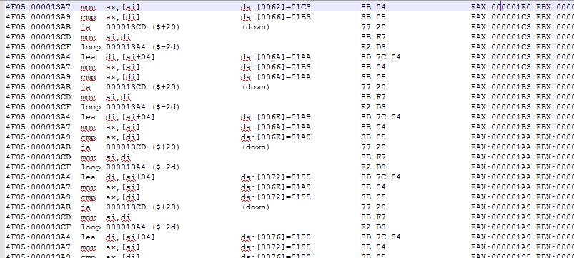
The CPU log looks like this
In the CPU log file, I could look for file accesses. This is easy - in MS-DOS file operations all go through interrupt 0x21[archive].
I grep'ed the log for "int 21" and was left with a nice list of all file operations.
17EE:00004DEB int 21 ;open AX:3D02 CX:0000 DX:0237 DI:023F ES:9F7C
17EE:00004DEB int 21 ;seek file=5 origin=SEEK_SET offset=0000552B (tuneamusic2) AX:4200 CX:0000 DX:552B DI:0000 ES:50BC
17EE:00004DEB int 21 ;read file=5 size=00000E13 (tuneamusic2.length) buffer=50BC:0000 AX:3FBC CX:0E13 DX:0000 DI:0000 ES:50BC
17EE:00004DEB int 21 ;close file=5 AX:3E13 CX:0E13 DX:0000 DI:0000 ES:50BC
17EE:00004DEB int 21 ;open AX:3D02 CX:0000 DX:0237 DI:023F ES:9F7C
17EE:00004DEB int 21 ;seek file=5 origin=SEEK_SET offset=0000376D (datamendstr2) AX:4200 CX:0000 DX:376D DI:0000 ES:50BC
17EE:00004DEB int 21 ;read file=5 size=00000C41 buffer=50BC:0000 AX:3FBC CX:0C41 DX:0000 DI:0000 ES:50BC
17EE:00004DEB int 21 ;close file=5 AX:3E41 CX:0C41 DX:0000 DI:0000 ES:50BC
7ED7:00008139 int 21 ;open AX:3D00 CX:0000 DX:0816 DI:0000 ES:E699
7ED7:00008154 int 21 ;seek file=5 origin=SEEK_SET offset=00000028 AX:4200 CX:0000 DX:0028 DI:0000 ES:E699
7ED7:00008162 int 21 ;read file=5 size=00000008 AX:3F28 CX:0008 DX:0820 DI:0000 ES:E699
7ED7:00008174 int 21 ;seek file=5 origin=SEEK_SET offset=0000C38E AX:4200 CX:0000 DX:C38E DI:0000 ES:E699
7ED7:00008185 int 21 ;read file=5 size=0000060D AX:3F8E CX:060D DX:0828 DI:0000 ES:E699
7ED7:0000819B int 21 ;close file=5 AX:3E29 CX:060D DX:0828 DI:0000 ES:E699
17EE:00004DEB int 21 ;open AX:3D02 CX:060D DX:05A5 DI:05AE ES:9F7C
17EE:00004DEB int 21 ;seek file=5 origin=SEEK_SET offset=00000299 (bmapleft_on) AX:4200 CX:0000 DX:0299 DI:0000 ES:50BC
17EE:00004DEB int 21 ;read file=5 size=00000294 AX:3FBC CX:0294 DX:0000 DI:0000 ES:50BC
17EE:00004DEB int 21 ;close file=5 AX:3E94 CX:0294 DX:0000 DI:0000 ES:50BC
17EE:00004DEB int 21 ;open AX:3D02 CX:0000 DX:05A5 DI:05AE ES:9F7C
17EE:00004DEB int 21 ;seek file=5 origin=SEEK_SET offset=0000E9C4 (bmapdeaduk.offset) AX:4200 CX:0000 DX:E9C4 DI:0000 ES:86F6
17EE:00004DEB int 21 ;read file=5 size=0000C57C (bmapdeaduk.length) buffer=86F6:0000 AX:3FF6 CX:C57C DX:0000 DI:0000 ES:86F6
17EE:00004DEB int 21 ;close file=5 AX:3E7C CX:C57C DX:0000 DI:0000 ES:86F6
So the game fetches and plays a sad song tuneamusic2, reads up a Mission End String from datamendstr2, and then fetches bmapdeaduk. The latter is left at address 86F6:0000. I searched the log for operations on this address, and found this:
17EE:000057C7 repe movsw CX:62C0 SI:0000 DI:0000 DS:86F6 ES:726F
The "repe movsw" is actually a "rep movsw" as rnlf said. This is in essence a memcpy of 0x000062C0 words = 50560 bytes (bmapdeaduk.length) from 86F6:0000 to 726F:0000.
More log searching and I found this bit:
17EE:000053C0 mov ax,es AX:726E BX:0FD5 CX:C50E SI:5AE0 DI:5AEC DS:EA25 ES:86F5
17EE:000053C2 inc ax AX:86F5 BX:0FD5 CX:C50E SI:5AE0 DI:5AEC DS:EA25 ES:86F5
17EE:000053C3 mov es,ax AX:86F6 BX:0FD5 CX:C50E SI:5AE0 DI:5AEC DS:EA25 ES:86F5
17EE:000053C5 mov ax,ds AX:86F6 BX:0FD5 CX:C50E SI:5AE0 DI:5AEC DS:EA25 ES:86F6
17EE:000053C7 or ax,di AX:EA25 BX:0FD5 CX:C50E SI:5AE0 DI:5AEC DS:EA25 ES:86F6
17EE:000053C9 je 000053CD ($+2) AX:FAED BX:0FD5 CX:C50E SI:5AE0 DI:5AEC DS:EA25 ES:86F6
17EE:000053CB mov [di],es AX:FAED BX:0FD5 CX:C50E SI:5AE0 DI:5AEC DS:EA25 ES:86F6
17EE:000053CD clc AX:FAED BX:0FD5 CX:C50E SI:5AE0 DI:5AEC DS:EA25 ES:86F6
17EE:000053CE retf AX:FAED BX:0FD5 CX:C50E SI:5AE0 DI:5AEC DS:EA25 ES:86F6
17EE:00005120 mov ax,es AX:FAED BX:0FD5 CX:C50E SI:5AE0 DI:5AEC DS:EA25 ES:86F6
17EE:00005122 pop bp AX:86F6 BX:0FD5 CX:C50E SI:5AE0 DI:5AEC DS:EA25 ES:86F6
17EE:00005123 pop di AX:86F6 BX:0FD5 CX:C50E SI:5AE0 DI:5AEC DS:EA25 ES:86F6
17EE:00005124 pop si AX:86F6 BX:0FD5 CX:C50E SI:5AE0 DI:5AEC DS:EA25 ES:86F6
17EE:00005125 pop dx AX:86F6 BX:0FD5 CX:C50E SI:5AE0 DI:5AEC DS:EA25 ES:86F6
17EE:00005126 pop cx AX:86F6 BX:0FD5 CX:C50E SI:5AE0 DI:5AEC DS:EA25 ES:86F6
17EE:00005127 pop bx AX:86F6 BX:0FD5 CX:C57C SI:5AE0 DI:5AEC DS:EA25 ES:86F6
17EE:00005128 pop es AX:86F6 BX:0FD4 CX:C57C SI:5AE0 DI:5AEC DS:EA25 ES:86F6
17EE:00005129 pop ds AX:86F6 BX:0FD4 CX:C57C SI:5AE0 DI:5AEC DS:EA25 ES:86F5
17EE:0000512A retf AX:86F6 BX:0FD4 CX:C57C SI:5AE0 DI:5AEC DS:EA25 ES:86F5
200F:00005A1B jc 00005A49 ($+2c) AX:86F6 BX:0FD4 CX:C57C SI:5AE0 DI:5AEC DS:EA25 ES:86F5
200F:00005A1D mov es,ax AX:86F6 BX:0FD4 CX:C57C SI:5AE0 DI:5AEC DS:EA25 ES:86F5
200F:00005A1F xor di,di AX:86F6 BX:0FD4 CX:C57C SI:5AE0 DI:5AEC DS:EA25 ES:86F6
200F:00005A21 mov al,[si+07] AX:86F6 BX:0FD4 CX:C57C SI:5AE0 DI:0000 DS:EA25 ES:86F6
200F:00005A24 mov bx,[si+0A] AX:8603 BX:0FD4 CX:C57C SI:5AE0 DI:0000 DS:EA25 ES:86F6
200F:00005A27 mov si,cs:[5259] AX:8603 BX:FD31 CX:C57C SI:5AE0 DI:0000 DS:EA25 ES:86F6
200F:00005A2C mov ds,[si] AX:8603 BX:FD31 CX:C57C SI:5D90 DI:0000 DS:EA25 ES:86F6
200F:00005A2E xor si,si AX:8603 BX:FD31 CX:C57C SI:5D90 DI:0000 DS:726F ES:86F6
200F:00005A30 call 4F05:10B7 AX:8603 BX:FD31 CX:C57C SI:0000 DI:0000 DS:726F ES:86F6
Which is the set up for, and calling of, the resource decompression routine.
Disassembling
I got a version of IDA disassembler from ScummVM website[archive] that is freeware but also old enough to still support 16bit DOS executables.
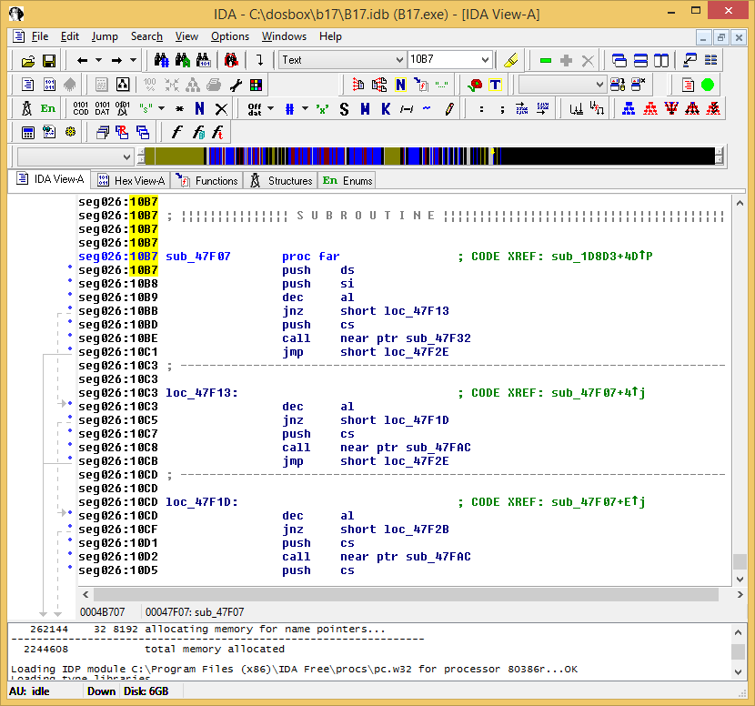
The decompression routine at 4F05:10B7 in IDA
I then had some false starts thinking of properly reimplementing the routine in C, but it was taking too much work.
Reassembling
So I had the idea to write a shell around the disassembled code from IDA. I picked NASM as the most recommended assembler around.
Since I was going to need more than 64k bytes of RAM to hold compressed and uncompressed data, I had to create DOS EXE files rather than COM files.
This section of NASM docs[archive] describes how but its linker suggestions weren't any good.
I used the linker from OpenWatcom v2.
OpenWatcom v2 (at least in Windows) requires some environment setting, which can be done like this from a batch file, where OpenWatcom v2 is installed to ".\Utilities\OWv2":
set PATH=%PATH%;%~dp0Utilities\OWv2\BINNT;%~dp0Utilities\OWv2\BINW
set INCLUDE=%~dp0Utilities\OWv2\H;%~dp0Utilities\OWv2\H\NT;%~dp0Utilities\OWv2\H\NT\DIRECTX;%~dp0Utilities\OWv2\H\NT\DDK
set WATCOM=%~dp0Utilities\OWv2
set EDPATH=%~dp0Utilities\OWv2\EDDAT
set WWINHELP=%~dp0Utilities\OWv2\BINW
set WHTMLHELP=%~dp0Utilities\OWv2\BINNT\HELP
set WIPFC=%~dp0Utilities\OWv2\WIPFC
And then one can build a MS-DOS 16bit executable from an assembly file like this:
nasm -f obj -o main.obj main.asm
wlink option quiet name xtract.exe format dos file main.obj
I then wrote the skeleton of a command line utility to
- Get a resource name and output file from the command line arguments
- Open _INDEX and find the 22 byte resource entry
- Open the data file and load the compressed resource to one free segment
- Call the decompression routine and decompress the resource to another free segment
- Write the decompressed resource to the output file
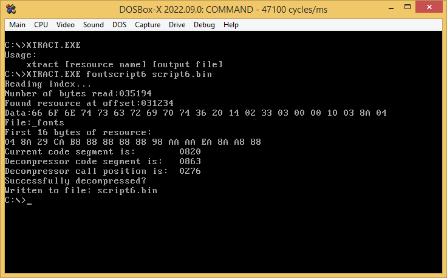
Using XTRACT utility in DOSBox
It was written very much in baby's first assembly program style. The openly available book The Art of Assembly[archive] was very useful.
The finished utility works correctly, and since it is a DOS program is effectively cross-platform (as long as DOSBox is available).
Dead ends
Now after all this effort, it would be cool if I had something to show for it... but I don't. All resources seem to be in internal ad hoc formats.
- bmap and sprt resources are in a bitplane format well suited to mode X, but a bit hard to make sense of
- data resources are mostly uninteresting strings
- I can't make sense of shpe resources
- TRiD32 says font resources are PCX files but they aren't
- tune resources are not MIDI files or any well known format
An attempt at converting bmapdeaduk
Shape resources specifically which motivated the whole thing are quite large, even the smallest ones:
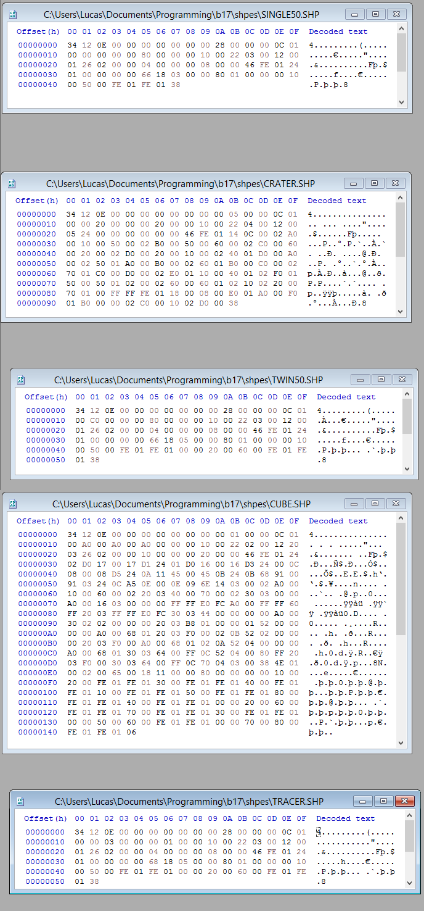
The smallest shpe resources
I have a few theories about the shape resources.
- No texture coordinates and all details even wing roundels are polygon-based
- Polygons have arbitrary vertex count rather than being limited to triangles, for efficiency in a software renderer
- Each polygon/face has a single byte for colour and no normal vector given the flat unshaded look of the game
- There are not only polygons but also line segments such as those forming the Me262 canopy
- Rather than a vertex count there could be a terminator byte(s)
- Rather than a polygon count there could be a terminator byte(s)
- Each vertex is 3 words = 12 total bytes long in 8.8 fixed point format
- There could be LOD data that is simpler or more complex geometry according to distance from camera
- There is a header but hard to tell how many bytes long and if it has any meaning
Lastly, here is a link to a file which I used while working on this: NOTES.TXT.